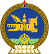

Donde queda mongolia
Mongolia tiene tres grandes cordilleras: la de mayor altitud es el macizo de Altái, que se extiende por el oeste y suroeste del país en dirección noroeste-sureste. El punto más alto de esta cadena montañosa es el pico Juiten, de 4734 metros. Una segunda cordillera la forman las montañas de Jangai, orientadas también del noroeste hacia el sureste y que ocupan gran parte del centro y centro-norte del país. Son montañas de aparición anterior a las del Altái, más erosionadas y de menor altura, con muchos bosques y pastos alpinos. La última de las tres es la cadena de las montañas de Khentii, situada cerca de la frontera con Rusia, al noreste de Ulán Bator; es la de menor altura.
Questions
1)cual es la bandera
2)¿cual es el escudo?
|  |  |
idioma
1)El idioma mongol engloba todo un abanico de dialectos y lenguas relacionadas entre sí. El nombre oficial con el que se denomina el idioma mongol de Mongolia es el Mongol KhalkhaSu nombre procede de las cuatro provincias Khalkha que fueron las que forjaron la región de Mongolia durante el S.XVII.mognogl Además, con el nombre de Khalkha se conoce también al grupo más numeroso de mongoles del país de Mongolia.
2)
Población: 2,996,000
Capital: Ulaanbaatar
Moneda: Tugrik (MNT)
Zona: 1,565,000 km²
Zona horaria: Asia/Ulaanbaatar
religion: La religión tradicional de los pueblos mongoles fue el chamanismo, que aún influye en la cultura mongola y en su budismo, y es practicado por una minoría dentro de Mongolia. Sin embargo, el budismo tibetano es la religión tradicional y predominante seguida por el 93% de la población.
Simbol
 |